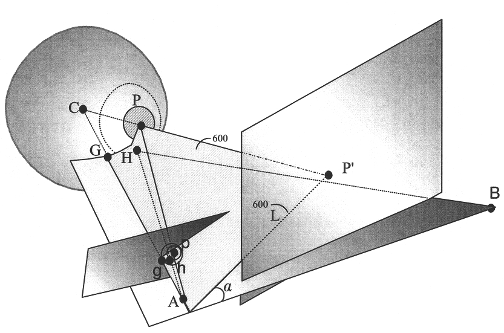
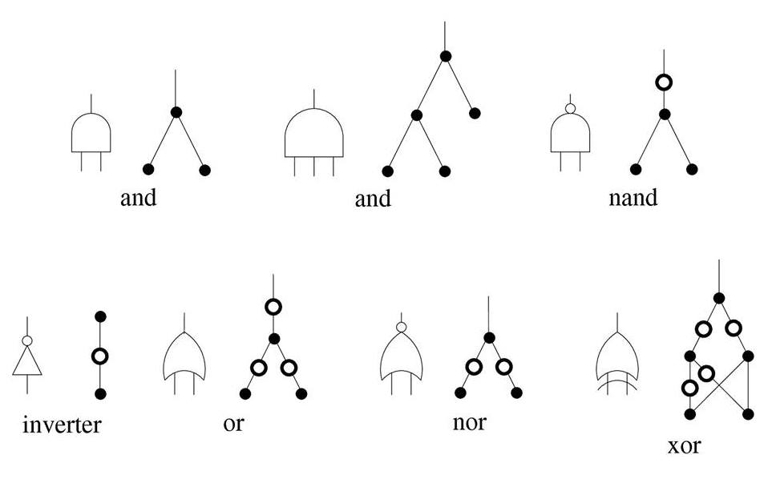

Music Recommendation Based on Artist Novelty and Similarity
Most music recommendation systems recommend only popular songs since they are most easily accepted. However, if a system can recommend a song which the listener might like but had never heard before, the song's newness, its unfamiliarity, might better appeal to many listeners' desire to 'discover' new music and share it with their friends. Based on artists similarity and popularity, we built a system that can recommend new songs.
Publication:-
Ning Lin, Ping-Chia Tsai, and Homer H. Chen, "Music Recommendation Based on Artist Novelty and Similarity," 2014 IEEE International Workshop on Multimedia Signal Processing (MMSP).

Poster

Gaze Tracking
If we can accurately track a person's gaze direction, we can find out what object he/she is looking at. I am now helping with developing new methods to improve gaze tracking precision, which currently has a mean gaze error of 2-5 degrees, in Professor Yi-Ping Hung's Image and Vision Lab. I expected to improve the precision of gaze tracking by 30%-40%.

Mind Map
It is hard to record the thoughts of participants during brainstorming. Mind Map is an iOS app on iPad which attempts to help people record and organize their thoughts or flow of minds during brainstorming. Besides the general writing function, this app (to serve as a product prototype) provides different styles and colors for nodes. There is also a drawing function to make it more convenient to record participants' thoughts. This is the final project of Mobile Phone Programming (NM5216).
Poster:
- Ping-Chia Tsai, Yan-Chun Chen, Jhao-Ting Chen, and Mike Y. Chen, "Mind Map," Poster Presentation, National Taiwan University, 2013.

Simulation of Low-Density Parity-Check (LDPC) Code
This is the simulation of the well-known LDPC code used in 802.11n. By encoding incoming signals by multiplication with a large-scale sparse matrix, it can significantly reduce the error rate of the original code. This is the final project of Electrical Engineering Lab Topics on Communication System (EE3018).
- Report:

Functionally Reduced And-Inverter Graph (FRAIG)
This is a C/C++ program which can parse digital circuits described in the AIGER format. It provided optimization functions, including sweep, trash, optimize, and fraig, to reduce the circuit size and simulation time by finding functionally equivalent candidate (FEC) pairs. This is the final project of Data Structure and Programming (EE3011).
- Report: